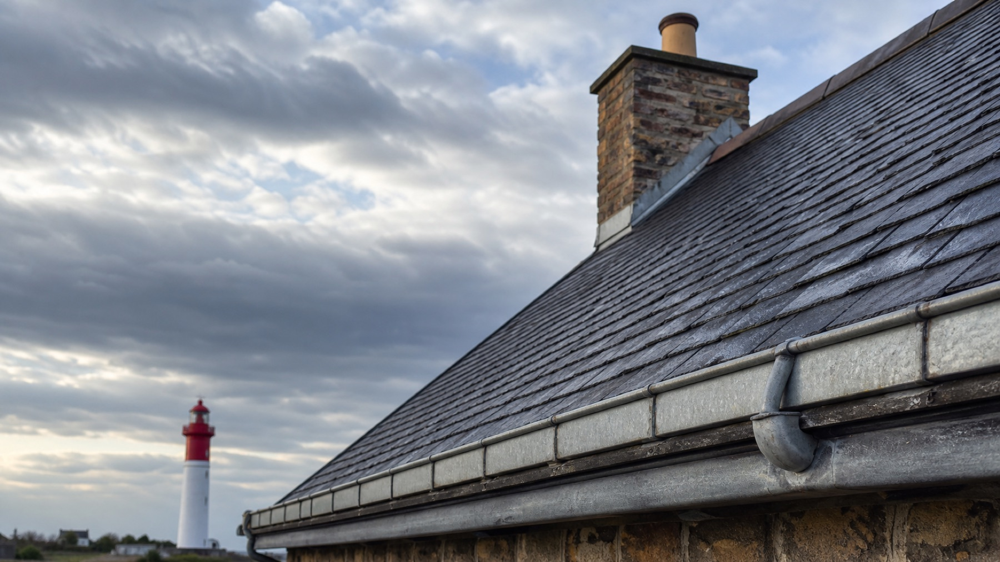
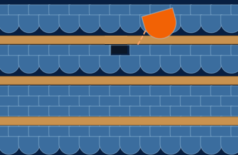
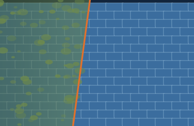
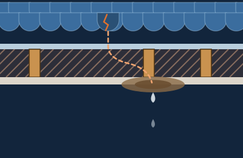
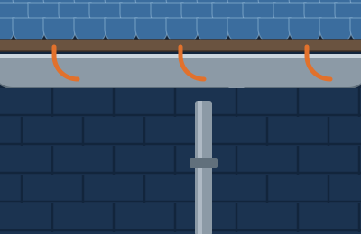
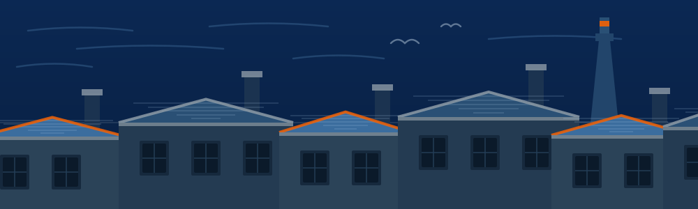
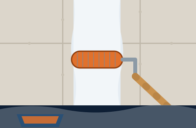

Urgence 24h/24, 7j/7
Fuite en cours, tuiles arrachées, bâche à poser : on décroche jour et nuit, week-end et jours fériés compris.

Couvreur — Ouistreham & Côte de Nacre
Entretien, démoussage, réparation et recherche de fuite sur les toitures du littoral du Calvados. On monte, on regarde, on vous dit ce qui tient et ce qui ne tient plus.
Urgence fuite ou tuiles arrachées ? On décroche 24h/24, 7j/7
Christopher Jardin · 80 avenue du Maréchal Foch, 14150 Ouistreham · SIREN 511 648 826
Fuite en cours, tuiles arrachées, bâche à poser : on décroche jour et nuit, week-end et jours fériés compris.
Une tache au plafond vient rarement de l'endroit où elle apparaît. On remonte l'eau jusqu'à son point d'entrée.
On monte voir le toit, on photographie ce qui ne va pas et on chiffre. Sans frais et sans engagement.
Les travaux de couverture sont couverts dix ans après la réception du chantier.
Le métier principal
Ardoise, tuile plate, tuile mécanique, zinc : les toitures du bord de mer se dégradent plus vite qu'ailleurs. L'essentiel du travail consiste à les tenir en état plutôt qu'à les refaire.

Contrôle complet du rampant, des rives et des points singuliers. On remplace les ardoises cassées ou glissées, on recale ce qui a bougé avec le vent.

Brossage et traitement anti-mousse. Sur la côte, l'humidité permanente fait revenir la mousse vite : on traite le fond, pas juste la surface visible depuis la rue.

Une auréole au plafond vient rarement de l'endroit où elle apparaît. On remonte l'eau jusqu'à son point d'entrée avant de toucher quoi que ce soit.

Gouttières, descentes, solins, noues et abergements. C'est presque toujours le zinc qui lâche en premier sur les maisons exposées au sel.
Ce qu'on regarde en montant
Quand vous voyez une tache au plafond, le problème est souvent trois couches plus haut. Cliquez sur un repère pour voir ce qu'on vérifie, et ce qui lâche en premier ici.
Flèches gauche et droite pour passer d'une couche à l'autre.
…
…
Pourquoi ça bouge plus vite ici

Illustration — la bande littorale entre Ouistreham et Lion-sur-Mer.
Entre Ouistreham et Lion-sur-Mer, rien n'arrête les coups de vent qui arrivent de la Manche. Ils soulèvent les ardoises de rive, décalent les faîtières et arrachent les crochets fatigués. Après chaque grosse dépression, il y a des choses à recaler.
Le sel en suspension attaque les métaux avant tout le reste. Gouttières, descentes, solins, crochets : le zinc et l'acier vieillissent nettement plus vite à moins de deux kilomètres du rivage qu'à Caen.
Le climat normand garde les toitures humides une bonne partie de l'année. La mousse s'installe sur les versants nord, retient l'eau contre l'ardoise et finit par la faire éclater au gel.
En complément
Une fois le toit en état, on peut enchaîner sur l'intérieur et les façades sans faire venir une deuxième entreprise.

Comment ça se passe
24h/24, 7j/7. Vous décrivez le problème ; si c'est une fuite active, ça passe devant le reste.
Déplacement gratuit. On monte sur le toit, on photographie ce qui ne va pas et on vous le montre.
Un devis écrit, détaillé, sans engagement. Ce qui est urgent et ce qui peut attendre sont séparés.
Date fixée avec vous. On bâche, on travaille, on redescend les gravats et on nettoie derrière nous.
Zone d'intervention
Base à Ouistreham, intervention sur toute la bande littorale du Calvados et l'agglomération caennaise.
Votre commune n'est pas dans la liste ? Appelez quand même, on se déplace au-delà selon le chantier.
Questions fréquentes
Contact
Le téléphone reste le plus rapide, surtout pour une fuite.
Cinq champs, deux minutes. On vous rappelle pour caler la visite.
On vous rappelle pour caler la visite.
Pour une fuite en cours, appelez directement le 06 58 94 19 08.